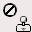
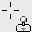

| 3.11. ക്ലോൺ | ||
|---|---|---|

|
3. പെയിന്റ് ഉപകരണങ്ങൾ |  |
| 3.11. ക്ലോൺ | ||
|---|---|---|
|
|
3. പെയിന്റ് ഉപകരണങ്ങൾ | |
ക്ലോൺ ഉപകരണം ഒരു ഇമേജ് അല്ലെങ്കിൽ പാറ്റേൺ നിന്ന് പകർത്താൻ നിലവിലെ ബ്രഷ് ഉപയോഗിക്കുന്നു. അതു പല ഉപയോഗങ്ങൾ ഉണ്ട്: ഏറ്റവും പ്രധാനപ്പെട്ട ഒന്നാണ് മറ്റ് പ്രദേശങ്ങളിൽ നിന്ന് പിക്സൽ ഡാറ്റ ഉപയോഗിച്ച് “painting over” അവരെക്കൊണ്ടു, ഡിജിറ്റൽ ഫോട്ടോകളിൽ പ്രശ്നം പ്രദേശങ്ങൾ അറ്റകുറ്റം ആണ്. ഈ രീതി പഠിക്കാൻ ഒരു സമയത്ത് എടുക്കും, എന്നാൽ ഒരു വിദഗ്ധ ഉപയോക്താവിന്റെ കയ്യില് അതു വളരെ ശക്തമാണ്. മറ്റൊരു പ്രധാന ഉപയോഗം പാറ്റേണിലുള്ള രേഖകളോ കർവുകൾ വരയ്ക്കാൻ ആണ്: ഉദാഹരണങ്ങൾ Patterns കാണുക.
നിങ്ങൾ ഒരു ചിത്രത്തിൽ നിന്ന്, പകരം ഒരു മാതൃകയുടെ ക്ലോൺ ആഗ്രഹിക്കുന്നുണ്ടെങ്കിൽ, നിങ്ങൾ നിന്ന് പകർത്താൻ ആഗ്രഹിക്കുന്ന ചിത്രം ജിമ് നോട്. ആഗ്രഹിച്ച ഉറവിട സ്വരൂപത്തിൽ Ctrl കീ ക്ലിക്കു താഴേയ്ക്കാക്കുമ്പോൾ ഇത് സാധ്യമാക്കുന്നു. ഈ വിധത്തിൽ ഉറവിടം വെച്ചിരിക്കുന്നു വരെ നിങ്ങൾക്ക് ക്ലോൺ ഉപകരണം ഉപയോഗിച്ച് വരയ്ക്കാൻ കഴിയില്ല: പ്രയോഗം കഴ്സർ  കാണിച്ചുകൊണ്ട് ഈ പറയുന്നു.
നിങ്ങൾ ഒരു പാറ്റേൺ നിന്ന് ക്ലോൺ എങ്കിൽ പാറ്റേൺ tiled ആകുന്നു; ആ നിങ്ങൾ അരികുകളും ഒന്ന് കഴിഞ്ഞ നീക്കങ്ങളാണ് നിന്ന് പകറ്ത്തുന്ന പോയിന്റ്, അതു പാറ്റേൺ അനിശ്ചിതമായി, സൈഡ് ബൈ സൈഡ് ആവർത്തിച്ച് പോലെ, സമ്മുഖ അരികിനോട് വികാരവും തുടരുന്നു വരുമ്പോൾ ആണ്. നിങ്ങൾ ഒരു ചിത്രത്തിൽ നിന്ന് ക്ലോൺ ഇത് സംഭവിക്കാം: നിങ്ങൾക്ക് ഉറവിടം അറ്റങ്ങൾ അപ്പുറം പോയാൽ, ക്ലോൺ ഉപകരണം എന്തെങ്കിലും മാറ്റങ്ങൾ ഉത്പാദക നിർത്തുന്നു.
നിങ്ങൾ മറ്റേതെങ്കിലും വരയ്ക്കാനാകുന്നത് ഏതെങ്കിലും വരയ്ക്കാനാകുന്നത് (എന്നതാണ് ഏതെങ്കിലും പാളി, ലെയർ മാസ്ക്, അല്ലെങ്കിൽ ചാനൽ) മുതൽ ക്ലോൺ കഴിയും. നിങ്ങൾ പോലും QuickMask മോഡ് മാറിക്കൊണ്ട്, അല്ലെങ്കിൽ നിന്ന് നിരക്കു മാസ്ക് ക്ലോൺ കഴിയും. ഈ ലക്ഷ്യം പിന്തുണയ്ക്കാത്ത (ഉദാഹരണത്തിന്, ഗണമാണോയെന്നത് പാളി അല്ലെങ്കിൽ ഒരു പാളി മാസ്ക് ഒരു ആർജിബി പാളി നിന്ന് ക്ലോണിങ്) പകർത്തുന്നത് നിറങ്ങൾ വരുമെങ്കിൽ, നിറങ്ങൾ അടുത്തുള്ള സാധ്യത approximations പരിവർത്തനം ചെയ്യും.
You can activate this tool in several ways:
From the image menu through → → .
By clicking on the tool icon
 in Toolbox.
in Toolbox.
By pressing the C keyboard shortcut.
എല്ലാ പെയിന്റ് പ്രയോഗങ്ങളിൽ അതേ പ്രതീതി കീ മോഡിഫയറുകൾക്കുള്ളകീബോർഡ് ഒരു വിവരണം വേണ്ടി Paint tools key modifiers കാണുക.
നിങ്ങൾ ഒരു ചിത്രത്തിൽ നിന്ന് ക്ലോണിങ് എങ്കിൽ Ctrl കീ, ഉറവിടം തിരഞ്ഞെടുക്കുന്നതിനായി ഉപയോഗിച്ച: നിങ്ങൾ ഒരു പാറ്റേൺ നിന്ന് ക്ലോണിങ് എങ്കിൽ അതു ഫലപ്രദമാകില്ല. നിങ്ങൾ ഏതെങ്കിലും ഇമേജ് ഏതെങ്കിലും പാളി നിന്ന്, പാളി (പാളികൾക്ക് ഡയലോഗ് കാണുന്നത് പോലെ) സജീവമാണ് അതേസമയം, അമർത്തിപ്പിടിച്ചു Ctrl കീ ഉപയോഗിച്ച്, ചിത്ര പ്രദർശന മാകാം ക്ലോൺ കഴിയും. ഉപകരണം ഓപ്ഷനുകൾ None, Aligned, അല്ലെങ്കിൽ Fixed ലേക്ക് ഉണ്ടെങ്കിൽ അലൈന്മെന്റ് സജ്ജീകരിച്ച, പിന്നെ നിങ്ങൾ ക്ലിക്ക് പോയിന്റ് ക്ളോണിങ് ഉറവിട മാറുന്നു: നിങ്ങൾ ആദ്യം ക്ലോൺ ഉപകരണം ഉപയോഗിച്ച് വളര്ത്താന് ആ ഘട്ടത്തിൽ ഇമേജ് ഡാറ്റ ഉപയോഗിക്കും. ഉറവിടം-നിരക്കു മോഡിൽ കർസർ ഒരു reticle ക്രോസ് ചിഹ്നം  മാറുന്നു.
സാധാരണ, ഉപകരണം ഓപ്ഷനുകൾ ഉടൻ ഒരു ഉപകരണം സജീവമാക്കാൻ പോലെ പണിസഞ്ചി കീഴിൽ ഘടിപ്പിച്ചിട്ടുള്ള ഒരു ജാലകം പ്രദർശിപ്പിക്കും. അഥവാ അങ്ങനെയല്ലെങ്കിൽ, നിങ്ങൾ തിരഞ്ഞെടുത്ത ഉപകരണം ഓപ്ഷൻ വിൻഡോ തുറക്കുന്ന → → വഴി ഇമേജ് ബാറില് നിന്നും ആക്സസ് ചെയ്യാൻ കഴിയും.
നിങ്ങളുടെ ഇവിടത്തെ നിര ഡാറ്റ മുകളിൽ കാണിച്ചിരിക്കുന്ന പാറ്റേൺ നിന്ന് പകർത്തിയ ഇല്ലയോ, അല്ലെങ്കിൽ ചിത്രങ്ങളിലൊന്ന് നിന്ന് നിങ്ങൾ തുറന്ന നിർണ്ണയിക്കുന്നു.
നിങ്ങൾ Image source തിരഞ്ഞെടുക്കുകയാണെങ്കിൽ നിങ്ങൾക്ക് GIMP Ctrl അത് -clicking വഴി, ഉറവിടമായി ഉപയോഗിക്കാൻ ഏത് പാളി, നിങ്ങൾ ഉപകരണം ഉപയോഗിച്ച് പെയിന്റ് മുമ്പായി നോട്.
നിങ്ങൾ Sample merged പരിശോധിക്കുകയാണെങ്കിൽ അത് നിങ്ങൾ എന്താണ് “see” (നിറം ഒരു മൾട്ടി ലെയർ ചിത്രത്തിന്റെ എല്ലാ പാളികൾ കൊണ്ട് ഉണ്ടാക്കിയ) തട്ടിപ്പിനിരയായി കാര്യം തുടർന്ന്. അതു പരിശോധിക്കാതെ ഉണ്ടെങ്കിൽ മാത്രമേ തിരഞ്ഞെടുത്ത ലെയർ തട്ടിപ്പിനിരയായി ആണ്. കൂടുതൽ വിവരങ്ങൾക്ക് ഗ്ലോസ്സറി Sample Merge കാണും.
പാറ്റേൺ ചിഹ്നം ക്ലിക്കുചെയ്താൽ കൂടെ വരയ്ക്കാൻ പാറ്റേൺ തിരഞ്ഞെടുക്കുന്നതിന് ഉപയോഗിക്കാനും കഴിയുന്ന പാറ്റേണുകൾ ഡയലോഗ്, ചെയ്യുന്നു. നിങ്ങൾ ഒരു ശ്രേണി സ്രോതസ്സിൽ നിന്നു ക്ലോണിങ് ഈ ഓപ്ഷൻ മാത്രം പ്രസക്തമാണ്.
അലൈന്മെന്റ് മോഡ് ബ്രഷ് സ്ഥാനവും സ്രോതസ്സ് സ്ഥാനം തമ്മിലുള്ള ബന്ധം നിഷ്കർഷിക്കുന്നു.
താഴെ പറയുന്ന ഉദാഹരണങ്ങളിൽ, ഞങ്ങൾ ക്ലോൺ ചെയ്യേണ്ട സാമ്പിൾ കൈക്കൊള്ളും എവിടെ ഒരു സ്രോതസ്സ് ചിത്രം, സാമ്പിൾ തട്ടിപ്പിനിരയായി ചെയ്യും ഒരു സ്ഥലത്തിന്റെ ഇമേജ് ഉപയോഗിക്കും (സ്രോതസ്സ് ചിത്രം ഒരു പാളി കഴിഞ്ഞില്ല)
ചിത്രം 14.82. ക്ലോൺ വിന്യാസം യഥാർത്ഥ ചിത്രങ്ങൾ
നാം പെൻസിൽ ടൂൾ ഉപയോഗിച്ച് വലിയ ബ്രഷ് ഉപയോഗിക്കും. സോഴ്സ് ഒരു വലയത്തോടു ക്രോസും ഇവിടെ പ്രതിനിധീകരിക്കുന്നു.
സോളിഡ് പശ്ചാത്തലത്തിൽ മാത്രം ഒരു ചിത്രം. നാം തുടർച്ചയായി മൂന്ന് ക്ലോണിങ് സ്ട്രോക്കുകൾ കോരും.
ഈ മോഡിൽ, ഓരോ brushstroke വെവ്വേറെ കണക്കാക്കപ്പെടും. ഓരോ സ്ട്രോക്ക്, എവിടെ നിങ്ങൾ ആദ്യം ക്ലിക്കിൽ ഉറവിടം ഉത്ഭവം നിന്ന് പകർത്തിയതാണ് പോയിന്റ് ലഭിക്കുന്നു; ഒരു ബ്രഷ് സ്ട്രോക്ക് തമ്മിലുള്ള യാതൊരു ബന്ധം ഉണ്ട്. ചേരിചേരാ മോഡിൽ, അവർ പരസ്പരം കൂട്ടിമുട്ടുന്ന എങ്കിൽ വിവിധ ബ്രഷ് സ്ട്രോക്കുകൾ സാധാരണയായി ഏറ്റുമുട്ടുക.
താഴെ ഉദാഹരണം: ഓരോ പുതിയ ബ്രഷ് സ്ട്രോക്ക് at, ഉറവിടം തിരികെ ആദ്യ സ്ഥാനത്തേക്ക് പോകുന്നു. ഒരേ സാമ്പിൾ എപ്പോഴും ക്ലോൺ ആണ്.
ഈ മോഡിൽ, ആദ്യം നിങ്ങൾ ചിത്രകലയെ സ്രോതസ്സ് ഉത്ഭവവും തട്ടിപ്പിനിരയായി ഫലം തമ്മിലുള്ള ഓഫ്സെറ്റ്, എല്ലാ തുടർന്നുള്ള വെഫ്റ്റ് ഒരേ ഓഫ്സെറ്റ് ഉപയോഗിക്കാൻ സജ്ജമാക്കുന്നു അമര്ത്തി. നിങ്ങൾ ഇഷ്ടപ്പെടുന്ന പോലെ അതുകൊണ്ട്, പല വെഫ്റ്റ് ഉപയോഗിക്കാം, എല്ലാ തമ്മിൽ സുഗമമായി mesh ചെയ്യും.
നിങ്ങൾ ഓഫ്സെറ്റ് മാറ്റണമെങ്കിൽ അമർത്തി Ctrl കീ ഉപയോഗിച്ച് ക്ലിക്ക് ചെയ്തു് പുതിയ സ്രോതസ്സ് ഉത്ഭവം തിരഞ്ഞെടുക്കുക.
ചുവടെയുള്ള ഉദാഹരണത്തിൽ, ഓരോ പുതിയ ബ്രഷ് സ്ട്രോക്ക് ചെയ്തത്, ഉറവിടം ഒരേ മുൻ ബ്രഷ് സ്ട്രോക്ക് ഉണ്ടായിരുന്ന ഓഫ്സെറ്റ് സൂക്ഷിക്കുന്നു. അതുകൊണ്ട്, ആദ്യ ബ്രഷ് സ്ട്രോക്ക് വേണ്ടി ഓഫ്സെറ്റ് യാതൊരു ക്ളോണിങ് ഇല്ല. ഇവിടെ, താഴെ തല്ലു, ഉറവിടം ഉറവിട ചിത്രം കാൻവാസ് നിന്നു അവസാനിക്കുന്നു; ഇവിടെനിന്നു ഫയലിന് വശം.
“Registered” മോഡ് മറ്റ് വിന്യാസം മോഡുകൾ നിന്നും വ്യത്യസ്തമാണ്. നിങ്ങൾ ഒരു ഇമേജ് നിന്നും പകർത്തി, ഒരു Ctrl -click ഒരു സ്രോതസ്സ് പാളി രജിസ്റ്റർ ചെയ്യും. അപ്പോൾ ഒരു ടാർഗെറ്റ് പാളിയായി ചിത്രകല ഉറവിട പാളി നിന്ന് ഓരോ ഇതേ പിക്സൽ ക്ലോൺ ചെയ്യും (ഒരേ കൂടെ പിക്സൽ ഓഫ്സെറ്റ്). നിങ്ങൾ ഒരേ ചിത്രം തന്നെ മറ്റൊരു പാളി ലേക്ക് പാളി നിന്നുള്ള ഒരു ഇമേജ് ഭാഗങ്ങൾ ക്ലോൺ ആഗ്രഹിക്കുന്ന ഈ ഉപയോഗപ്രദമാണ്. (പക്ഷേ മറ്റൊരു ചിത്രത്തിലേക്ക് ഇമേജ് നിന്ന് ക്ലോൺ കഴിയും എന്ന് ഓർക്കുക.)
ഓരോ ബ്രഷ് സ്ട്രോക്ക് at, ഉറവിട ഡെസ്റ്റിനേഷൻ പാളി മൗസ് പോയിന്റർ സ്ഥാനം ദത്തെടുത്ത്. താഴെ പറയുന്ന ഉദാഹരണത്തിൽ, ഡെസ്റ്റിനേഷൻ പാളി സോഴ്സ് പാളി ചെറുതാണ്; അതിനാൽ ഒരു ഫയലിന് വശമുണ്ട്.
ഈ മോഡ് ഉപയോഗിച്ച് നിങ്ങൾ മോഡുകൾ None അല്ലെങ്കിൽ Aligned വ്യത്യസ്തമായി ഒരു വര വരയ്ക്കാൻ പോലും സ്രോതസ്സ് ഉറവിടമുള്ള പെയിന്റ് ചെയ്യും. ഉറവിടം നീക്കം ചെയ്യില്ല.
ഉറവിടം നിശ്ചിത നിലനിർത്തണമെന്ന് കാണുക. ഒരേ ചെറിയ സാമ്പിൾ ഒരു ശക്തമാക്കി വഴിയിൽ identically വീണ്ടും:
സുതാര്യത ന് ക്ലോൺ ടൂൾ ഇഫക്റ്റുകൾ ഒരു ബിറ്റ് സങ്കീർണ്ണമായ ആകുന്നു. നിങ്ങൾക്ക് സുതാര്യതയും ക്ലോൺ കഴിയില്ല: നിങ്ങൾ ഒരു സുതാര്യമായ സ്രോതസ്സിൽ നിന്ന് ക്ലോൺ ശ്രമിച്ചാൽ, ഒന്നും ടാർഗെറ്റ് സംഭവിക്കുന്നു. നിങ്ങൾ ഒരു ഭാഗികമായും സുതാര്യമായ സ്രോതസ്സിൽ നിന്ന് ക്ലോൺ എങ്കിൽ, പ്രഭാവം സ്രോതസ്സ് ഒപാസിറ്റി വഴി വെയ്റ്റഡ് ആണ്. അതുകൊണ്ട്, അൽപംപോലും 100% അതാര്യത ഒരു ഹാർഡ് ബ്രഷ്:
വെള്ള ലേക്കായി അർദ്ധസുതാര്യ കറുത്ത ക്ലോണിംഗ് ചാര ഉത്പാദിപ്പിക്കുന്നത്.
കറുത്ത ലേക്കായി അർദ്ധസുതാര്യ കറുത്ത ക്ലോണിംഗ് കറുത്ത ഉത്പാദിപ്പിക്കുന്നത്.
വെളുത്ത ലേക്കായി അർദ്ധസുതാര്യ വെളുത്ത ക്ലോണിംഗ് വെളുത്ത ഉത്പാദിപ്പിക്കുന്നത്.
കറുത്ത ലേക്കായി അർദ്ധസുതാര്യ വെളുത്ത ക്ലോണിംഗ് ചാര ഉത്പാദിപ്പിക്കുന്നത്.
ക്ലോണിംഗ് സുതാര്യത വർദ്ധിപ്പിക്കാൻ കഴിയും ഒരിക്കലും, എന്നാൽ, “keep transparency” പാളി ഓണായിരിക്കുന്നുവെന്ന് എങ്കിൽ അതു കുറയ്ക്കാൻ കഴിയും. ഒരു അർദ്ധസുതാര്യ പ്രദേശത്ത് ലേക്കായി അസാധ്യമാണ് പ്രദേശം ക്ലോണിംഗ് അസാധ്യമാണ് ഫലം ഉളവാക്കുന്നു; മറ്റൊരു അർദ്ധസുതാര്യ പ്രദേശത്ത് ലേക്കായി ഒരു അർദ്ധസുതാര്യ പ്രദേശത്ത് ക്ലോണിങ് അതാര്യവസ്ഥയ്ക്ക് കൂടുന്നത്.
ക്ലോൺ ടൂൾ ഉപയോഗിക്കാൻ ശക്തമായ ഇഫക്റ്റുകൾ ലഭ്യമാകാൻ കുറച്ച് നോൺ-വ്യക്തമായ മാർഗങ്ങളുണ്ട്. നിങ്ങൾക്ക് ചെയ്യാൻ കഴിയുന്ന ഒരു കാര്യം, “Filter brushes” സൃഷ്ടിക്കുക എന്നുവെച്ചാൽ ഒരു ബ്രഷ് ഉപയോഗിച്ച് ഒരു ഫിൽട്ടർ അപേക്ഷിക്കുന്ന പ്രഭാവം സൃഷ്ടിക്കാൻ ആണ്. ഇത് ചെയ്യുന്നതിന്, നിങ്ങൾ പ്രവർത്തിക്കുന്ന കോപ്പി ഫിൽട്ടർ പ്രയോഗിക്കാൻ ആഗ്രഹിക്കുന്ന പാളി തനിപ്പകർപ്പ്. അപ്പോൾ “Registered” ലേക്കുള്ള “Image source” ആൻഡ് അലൈന്മെന്റ് ഉറവിടം ക്രമീകരണം ക്ലോൺ ഉപകരണം സജീവമാക്കുക. ഉറവിടമായി വെച്ചു യഥാർത്ഥ പാളി ന് പെയിന്റ് ചെയ്യുന്നതിന് ഫിൽറ്റർ ലയറിൽ Ctrl -click: അപ്പോൾ ഫലത്തിൽ യഥാർത്ഥ ലേയറിലേക്ക് ഫിൽറ്റർ ഇമേജ് ഡാറ്റ മഷി ചെയ്യും.
നിങ്ങൾ തിരഞ്ഞെടുത്തവർക്ക് പഴയപടിയാക്കാൻ അല്ലെങ്കിൽ ഒരു ബ്രഷ് ഉപയോഗിച്ച് മാറ്റങ്ങൾ വീണ്ടും അനുവദിക്കുന്ന ഫോട്ടോഷോപ്പ് ന്റെ “History brush”, അനുകരിക്കാൻ സമാനമായ സമീപനം ഉപയോഗിക്കാം. ഇത് ചെയ്യുന്നതിന്, ചിത്രം തനിപ്പകർപ്പാക്കുന്നത് ആരംഭിക്കുക; പിന്നെ, യഥാർത്ഥ ൽ തിരികെ ആവശ്യമുള്ള നിലയിലേക്ക് ചിത്രം ചരിത്രത്തിലോ പഴയപടിയാക്കിക്കൊണ്ട് പഴയപടിയാക്കുന്നതിനോ ചരിത്രം ഡയലോഗ് ഉപയോഗിച്ച് ഒന്നുകിൽ പോയി. (ഇത് യഥാർത്ഥ, പകർത്തി ലെ ചെയ്യണം ഒരു ചിത്രം തനിപ്പകർപ്പാക്കുന്നത് പഴയപടിയാക്കൽ ചരിത്രം ഡ്യൂപ്ലിക്കേറ്റ് കാരണം.) ഇപ്പോൾ “Registered” ലേക്ക് “Image source” ആൻഡ് അലൈന്മെന്റ് ലേക്ക് അവലംബം ക്രമീകരണം ക്ലോൺ ഉപകരണം സജീവമാക്കുക. ഒറ്റ ഇമേജിൽ നിന്നും ഒരു പാളി ന് Ctrl -click, മറ്റ് ഇമേജിൽ നിന്നും ഇതേ പാളി ന് പെയിന്റ്. നിങ്ങൾ അത് എങ്ങനെ ആശ്രയിച്ച്, ഈ നിങ്ങൾക്ക് ഒരു “undo brush” അല്ലെങ്കിൽ ഒരു “redo brush” ഒന്നുകിൽ നൽകുന്നു.